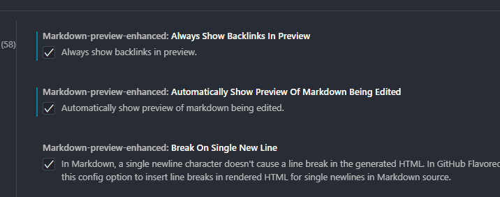
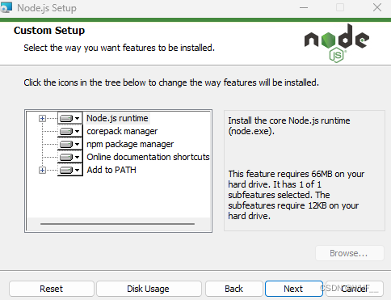
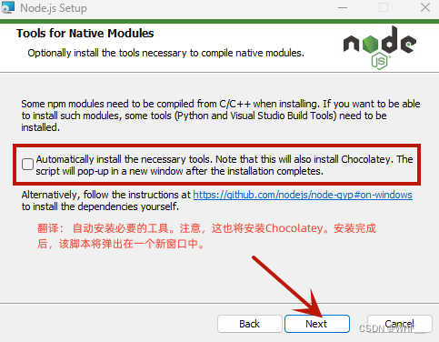
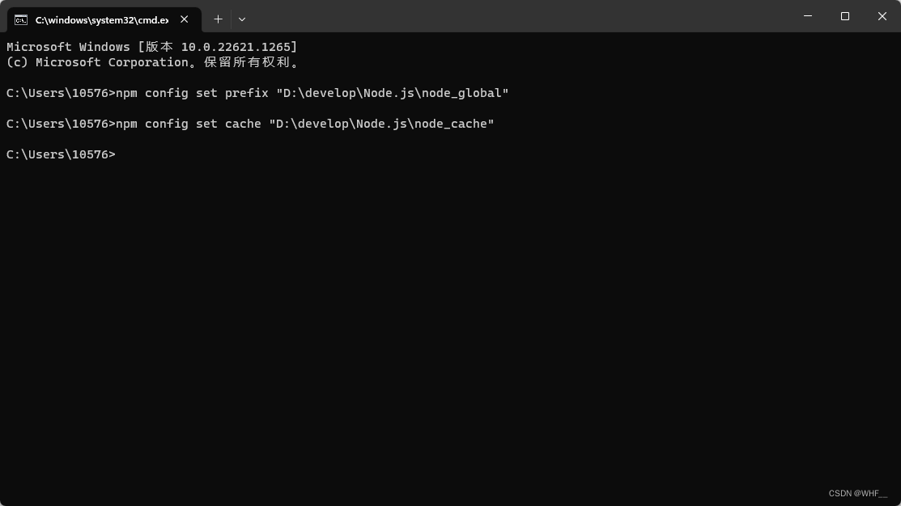
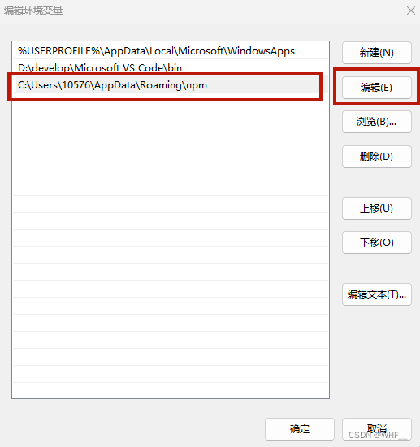
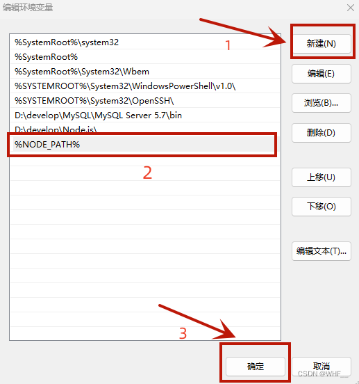
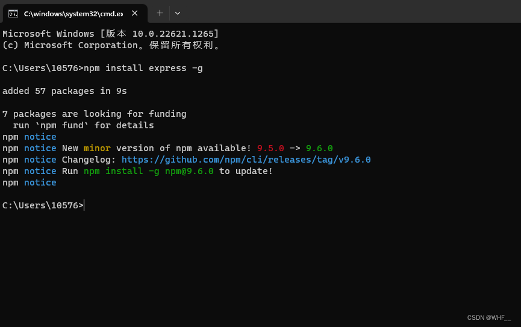
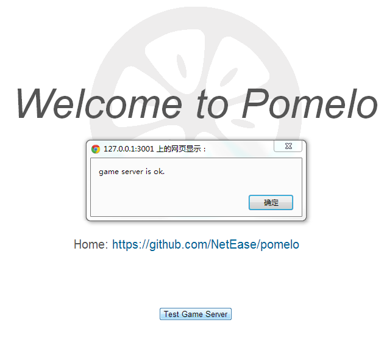
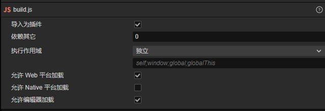

Help_01 开发环境配置
| Date | Author | Content |
|---|---|---|
| 2024/5/10 | 圆圈 | 创建文档 |
| 2024/5/12 | 圆圈 | 增加Server部署流程 |
1. 文档编辑器
1.1：Notable
- Url: 官网
- Download：夸克云文件/Package/Develop/Notable.rar
- Document: Markdown官方
- Version: [Free]1.8.4
1.2: Visual Studio Code
- 插件: Markdown Preview Enhanced
插件设置中勾选Always show backlinks in preview 和 Automatically show preview of markdown being eited

2. 客户端
2.1引擎：Cocos Creator
2.2 客户端底层框架：Notable
- Download: Cocos商店
3. 服务端
3.1 引擎：Node.JS
- Url: 官网
- NodeVersion: v18.19.0
- npmVersion: 10.2.3
- Install:
[Step1] Download: Node.js中文网进行下载和安装
Tips：如果想下载指定版本，点击【以往的版本】

//说明：
Node.js runtime 表示运行环境
npm package manager 表示npm包管理器
online documentation shortcuts 在线文档快捷方式
Add to PATH 添加到环境变量

不选中，直接点击【Next】
[Step2] 安装完成后，打开cmd输入如下指令，成功显示版本号说明安装成功
Tips：新版本的Node.js在安装时已经集成好了npm，老版本的node.js需要单独安装npm（npm的作用是对Node.js依赖的包进行管理）
//查看Node.js版本
node -v
//查看npm版本
npm -v
[Step3] 修改全局模块安装路径及cache路径
在Node.js的安装目录新建两个文件夹【node_global】【node_cache】

以管理员身份运行cmd，输入以下2行指令，把绝对路径改成自己Node.js的安装路径
npm config set prefix "D:\develop\Node.js\node_global"
npm config set cache "D:\develop\Node.js\node_cache"
[Step4] 修改环境变量

在【系统变量】中点击【新建】
变量名：NODE_PATH
变量值：D:\develop\Node.js\node_global\node_modules
保存变量后检查node_global中是否自动创建了node_modules，如果没有手动创建一个

修改【用户变量】中的【Path】，把默认的 C 盘下【 AppData\Roaming\npm 】修改成 【node_global】路径

修改【系统变量】中的【Path】，增加%NODE_PATH%

完成后在cmd输入以下命令，全局安装一个最常用的 express 模块进行测试，如上图即为成功
npm install -g express // -g代表全局安装
[Step5] 安装淘宝镜像源
cmd输入如下命令修改npm源
npm config set registry https://registry.npmmirror.com/
淘宝最新npm镜像源为registry.npmmirror.com，旧域名HTTPS证书已到期，不可再使用，若配置了错误的镜像源，可使用如下命令进行修改
清理缓存
npm cache clean --force
修改镜像配置
npm config set registry https://registry.npmmirror.com/
可选源
//官方源：在国外，速度慢
https://registry.npmjs.org/
//淘宝：国内最常用的镜像源，推荐
https://registry.npmmirror.com/
//阿里云
https://npm.aliyun.com/
//腾讯云
http://mirrors.cloud.tencent.com/npm/
//华为云
https://mirrors.huaweicloud.com/repository/npm/
输入如下命令查看npm源，是否替换成功
npm config get registry
[Step6] 安装cnpm
安装命令
npm install -g cnpm --registry=https://registry.npmmirror.com
查看版本验证安装是否成功
cnpm -v
若无法执行为cnpm所在路径未被添加，可修改环境变量或把cnpm移动至npm相同位置
3.2 服务端底层框架：Pinus
- Url: 官网
- Git: 官方Git
- Document: 官方文档
- Install:
[Step1] 安装Pinus
npm i pinus -g //安装到全局，推荐
npm i pinus --save //安装在应用
[Step2] 创建一个Pinus项目
$ pinus init ./HelloWorld //HelloWorld为项目名
//或者使用绝对路径创建
$ pinus init ""
创建项目过程中需要输入连接类型，输入1(WebSocket)，目前引擎未支持支持其他socket类型
cmd进入 HellWorldSrv\game-server目录
安装依赖包
cnpm install
编译项目
npm run build
启动项目服务
cd dist
pinus start

访问 http://localhost:3001，点击Test Game Server，提示 game server is ok 说明运行成功
其他服务器操作可查看官方文档
3.3 前后端通信测试
- 复制HelloWorld/web-server/public/js/lib/build/build.js到CocosCreator新建测试项目的script目录下
- 修改build.js 在末尾加上
require('boot');
 - 在CocosCreator编辑器的资源管理器中选中build.js然后在右边属性检查器中进行如上图设置
- 创建一个脚本把它拖到Main Camera上面，输入测试代码
import { _decorator, Component, Node } from 'cc';
const { ccclass, property } = _decorator;
//处理window上无pinus的异常
declare const window: Window & { pinus: any }
@ccclass('testNode')
export class testNode extends Component {
onLoad() {
var pinus = window.pinus;
var host = "127.0.0.1";
var port = "3010";
pinus.init({
host: host,
port: port,
log: true
}, function () {
pinus.request("connector.entryHandler.entry", "hello pinus", function (data) {
console.log(data.msg);
});
});
}
}
- 浏览器执行在控制台中查看打印信息，若成功访问服务端，会包括如下两条打印
connect to ws://127.0.0.1:3010
game server is ok.
4. 代码编辑器：Visual Studio Code
- Url: 官网
- Version: [Freee]1.89.1
5. Git
5.1 Web端
- Url：DevelopFrameworkProject
- Branch: master
5.2 客户端
- Download: 夸克云文件/Package/Develop/TortoiseGit2.1.6.0.0.rar
- Version: [Free]2.1.6.0.0
5.3 私钥
- Download: 夸克云文件/Package/Develop/Git私钥.rar